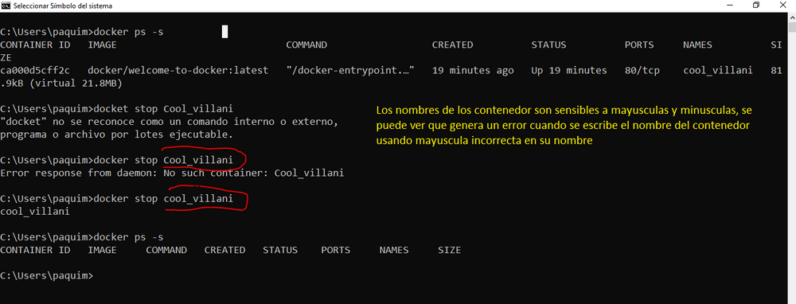
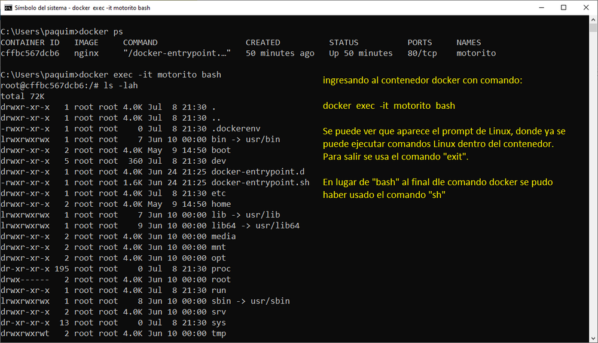
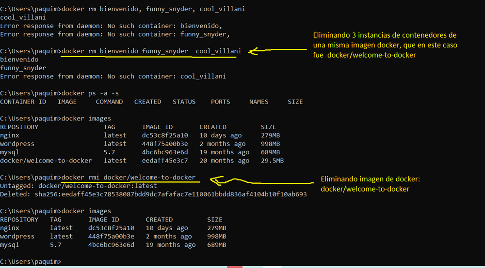

Practica Docker de Maria Lopez
En este trabajo se trabajo con un contenedor Docker.

Como puede verse en esta pantalla, Docker es Sensible a Mayúsculas y Minusculas.

Como puede verse en esta pantalla se muestra como se ingresa al interior de un contenedor docker.

Como puede verse en esta pantalla se muestra el proceso para eliminar un contenedor docker.